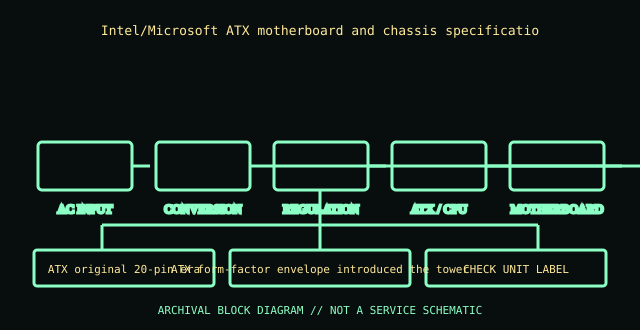

[ POWER CONVERSION // IDENTIFIED MODEL ]
Intel ATX 1.0 power-supply profile (1995)
Intel/Microsoft ATX motherboard and chassis specification, ATX PSU profile v1.0. This record is bounded to the named unit, standard revision, or model family below; nearby model names and replacement parts are not presumed equivalent.

HIGH-VOLTAGE SAFETY: Unplug before external inspection. Never open a power supply. Dangerous voltage can remain inside after it is disconnected. Do not attempt internal repair; use qualified service or replace the unit.
Verified identity & specifications
| Catalog identity | Intel/Microsoft ATX motherboard and chassis specification, ATX PSU profile v1.0 |
|---|---|
| Form factor / era | ATX original 20-pin era |
| AC input | AC input was specified by each PSU maker/market SKU; the ATX form-factor definition is not a universal-input nameplate. |
| DC output rating | ATX 1.0 described +3.3 V, +5 V, +12 V, −5 V, −12 V and +5 VSB rails; available current and combined power remained model-label specific. |
| Mechanical envelope | ATX form-factor envelope introduced the tower PSU outline; exact body length, fan position and mounting holes must be checked against the unit/case revision. |
| Connectors / interface | 20-position ATX main connector and legacy peripheral connections in early implementations. Signal assignments and wire colors are specification-revision specific. |
| Revision differences | This entry is the named 1995 ATX profile, not a manufactured PSU. Later ATX revisions changed connector pins, rails, standby/PS_ON behavior, and mechanical expectations; −5 V was subsequently removed. |
Compatibility & safe handling
- Match full model, suffix, region, revision and DC output label to the official documentation. Rated total watts alone do not establish rail or transient compatibility.
- Before replacement, confirm AC input range, rail current/combined limits, motherboard signaling and pinout, mechanical envelope, fasteners, cooling direction, and every required connector.
- Never open the PSU, defeat protective earth, or probe its internals. Do not energize a wet, cracked, corroded, burned, modified, or unidentified supply.
- Modular cable pinouts are not standardized at the PSU end. Use only cables expressly approved for this exact model/revision; matching plugs can have different wiring.
Model and revision notes
This entry is the named 1995 ATX profile, not a manufactured PSU. Later ATX revisions changed connector pins, rails, standby/PS_ON behavior, and mechanical expectations; −5 V was subsequently removed.
Intel ATX/ATX12V Power Supply Design Guide, used as a standards reference; correlate historical pinout claims to the cited ATX 1.0/Microsoft specification text.
Archival notes
Archive the exact standards revision/date. Do not apply a later ATX supply to a vintage board without confirming signaling, −5 V dependence, pinout, and load limits.
Photograph the complete nameplate, assembly/model code, revision/date code, input selector if present, cable ends and mounting side. Separate observed label data from published specifications and preserve the referenced manual issue.
Manufacturer / standards references
- Intel ATX/ATX12V Power Supply Design Guide, used as a standards referenceIntel ATX/ATX12V Power Supply Design Guide, used as a standards reference; correlate historical pinout claims to the cited ATX 1.0/Microsoft specification text.
- Intel — ATX / ATX12V Power Supply Design GuideStandards reference for the ATX electrical/mechanical family; use the revision specified for the product. Historical IBM supplies are not ATX and must not be adapted on this basis.
The exact nameplate and corresponding manufacturer manual remain controlling for regional and hardware revisions.